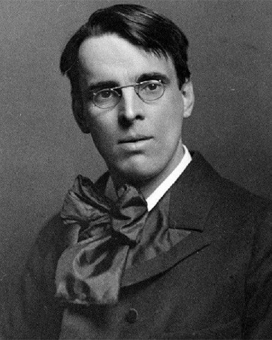

William Butler Yeats (13 Jun. 1865 – 28 Jan. 1930)
William Butler Yeats was an Irish poet playwright and he was born in Sandymount, Ireland. He was regarded as an important figure in the Irish Cultural Revival. His early poems are characterised by romanticism in both their form and content. Moreover, his poems are often molded from Irish legends and the occult. He developed a lifelong interest in mysticism and spiritism. From 1900, his style of poetry gradully changed. His poetry became more physical and realistic and his later poems made a significant contribution to modernism.
About Yeats
- One of the founder of the Abbey Theatre
- He was awarded the Nobel Prize for Literature in 1923.
- A senator of Irish Free State for two terms

Important poems
- The Lake of Innisfree (1888)
- When you are old (1893)
- Easter, 1916 (1916)
- The Second Coming (1920)
Love and marriage
In 1889, Yeats met Maud Gonne, an English heiress and ardent Irish Nationalist. She greatly influenced Yeats's writings and his life. Many of Yeats's poems are inspired by her, or mention her, such as This, This Rude Knocking. He also wrote the play, The Countess Cathleen based on her prototype. Yeats loved her for many years. However, Gonne rejected his marriage proposal. In 1917, he married Georgie Hyde-Lees after his proposal was rejected by Iseult Gonne, the daughter of Maud Gonne.